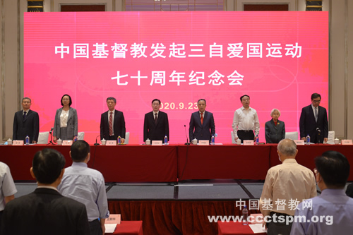

-
 手机版
手机版

- APP下载
-
 微信
微信

手机版
微信
——中国基督教发起三自爱国运动70周年纪念会在沪举行
 收藏
收藏

2020年9月23日，基督教全国两会在上海举行中国基督教发起三自爱国运动70周年纪念会。基督教全国两会副秘书长、副总干事以上同工，监事会监事，教会前辈代表，神学院校代表，教会年轻同工代表以及来自中华基督教青年会、女青年会全国协会和上海基督教青年会、女青年会的代表参加会议。中央统战部副部长、国家宗教事务局局长王作安，上海市委统战部副部长王霄汉等领导，全国政协参政议政人才库特聘专家徐以骅教授等学界嘉宾莅临祝贺。

上午9时，纪念会在庄严的国歌声中开幕。中国基督教协会会长吴巍牧师主持纪念会，中国基督教三自爱国运动委员会主席徐晓鸿牧师作题为“坚持中国化方向，弘扬爱国爱教传统，办好新时代的中国教会”的报告。
鉴古知今。报告回顾历史，指出70年来，我国基督教坚定走三自爱国道路，改变中国教会的洋教面貌；各地基督教三自爱国运动委员会协助落实党的宗教政策，维护中国教会的合法权益。70年来，我国基督教秉承合而为一的经训，建立中国教会独特的基督教两会治理模式；扎实开展教会事工，推进中国基督教和谐健康发展；深化神学思想建设，奠定基督教中国化的理论支撑；增进与普世教会的团契分享，提高中国教会的国际影响。这场运动凝聚了中国基督徒的爱国爱教力量，不断探索中国基督教与社会主义社会相适应的方式，强化了基督教中国化的使命担当，是一场具有先进性、革新性、长期性的运动。
道阻且长，行则将至；行而不辍，未来可期。报告指出，三自爱国运动虽已取得诸多阶段性成就，但是其间发现的问题依旧不容忽视。未来，需要在大家的共同努力下不断破解难题，继续秉持爱国爱教传统，大力继承发扬三自爱国精神；继续深化三自爱国内涵，丰富和完善中国化神学思想；继续坚持三自爱国原则，努力做好中国教会各项事工；继续扩大三自爱国基础，不断增强中国教会的凝聚力；继续迈向三自爱国目标，积极与社会主义社会相适应，从“五个继续”着手，进一步推进我国基督教中国化的进程。
百舸争流千帆竞，奋楫者先。报告号召广大基督徒高举三自旗帜，恪守三自原则，坚持基督教中国化方向，在圣灵的引领下常存信、望、爱，竭力多做主工，为同心合意建立神人共悦、和谐健康发展的中国教会奋勇前行；为把我国建设成为富强民主文明和谐美丽的社会主义现代化强国，实现中华民族伟大复兴的中国梦做出新贡献！

纪念会上，教会前辈中国基督教协会第五届会长曹圣洁牧师、教会青年代表金陵协和神学院学生代表朱约翰同学和学者代表徐以骅教授应邀致辞。曾经在吴耀宗先生身边工作过的曹圣洁牧师，亲身经历三自爱国运动的发展，她表示三自爱国运动的发起是拥护新中国和教会革新的一场爱国爱教运动，为我国教会的发展指明了方向；今天的同工同道应继承、学习教会前辈的大局意识，各地基督教两会应做好联系政府和信徒的桥梁，桥梁的两头都要牢固，既向国家负责，又不脱离信徒。朱约翰同学在发言中表示，三自爱国运动是一处无穷无尽的宝藏，其中既蕴含着先辈们立足中国文化表达信仰内核的成功先例，也有根据时代特点进行的形而上的神学思考，是值得下工夫去探索与学习的榜样，三自精神需要一代代同工同道在新时代中发扬光大。徐以骅教授在致辞中表示，三自爱国运动具有时代意义，在世界范围内开启了基督教摆脱帝国主义影响的先例，并且这一运动始终处于动态的、不断完善的过程中，具有坚韧的生命力。
王作安副部长在讲话中表示，三自爱国运动是中国基督教历史上的创举，影响深远，从此我国基督教走上了与社会主义社会相适应的道路；站在迈向第二个百年目标的历史新方位上，在坚持我国基督教中国化方向的基础上，三自爱国运动进入了新的阶段，希望我国基督教不断增强爱国意识，深化神学思想建设，要坚持问题导向，加强制度建设，加强教会人才培养，维护基督教领域正常秩序，正确开展对外交流，走出适合自己的道路。王作安副部长指出，三自成就来之不易，推进三自爱国运动任重道远，必须继续发扬三自优良传统，凝心聚力推进基督教在与社会主义社会相适应的道路上不断取得新进步。
纪念会开幕前，中国基督教协会副总干事文革牧师主持灵修，中国基督教三自爱国运动委员会副主席、上海市基督教三自爱国运动委员会主席徐玉兰牧师以“不忘初心、不违异象”为题分享，引用《使徒行传》26章19节至20节经文，勉励同工不忘起初的信心和爱心，铭记历史，不忘三自办好教会的初心。
70年前，吴耀宗先生等40位中国基督教领袖联名发表了《中国基督教在新中国建设中努力的途径》(通称《三自宣言》)。1950年9月23日，《人民日报》全文刊登《三自宣言》，并发表了题为《基督教人士的爱国运动》的社论，社论指出“这篇宣言是中国基督教一个有历史意义的文件”。《三自宣言》的发表标志着中国教会开始实行自治、自养、自传，带领广大信徒走上了爱国爱教的道路，成为新中国建设中的一股积极力量。这一爱国运动迅速得到了广大爱国信徒的热烈响应，基督教三自爱国运动在全国蓬勃开展起来。
70年砥砺奋进，中国基督教独立自主自办教会已经载入史册，这既是一个里程碑，也是一个新起点。我国基督教必将勇担新使命，传承和弘扬爱国爱教精神，为更好地实现基督教中国化、办好新时代的中国教会奋勇前行。
（摄影：吴新望）
编辑：莉莉
审校：加恩